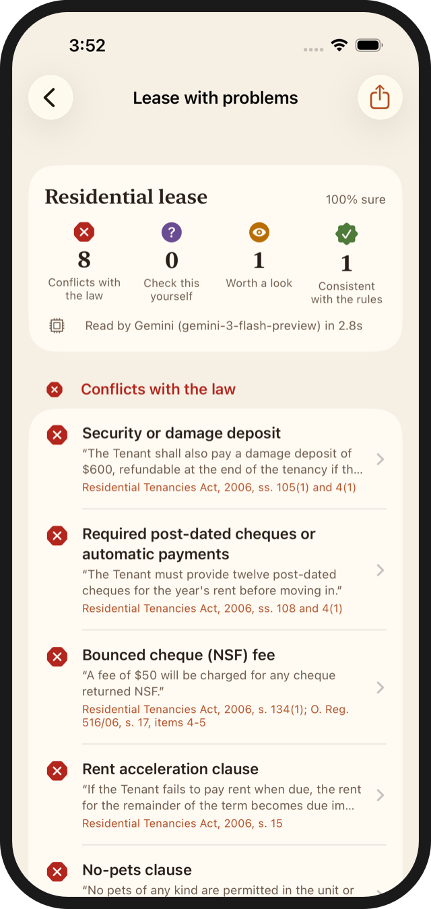
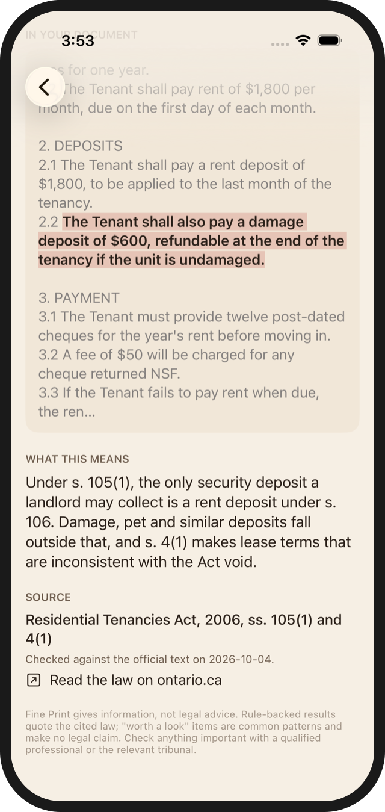
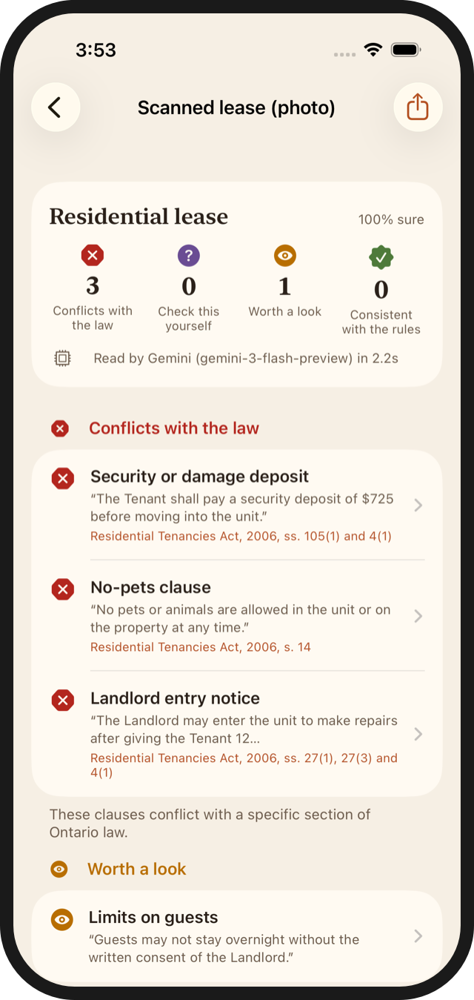
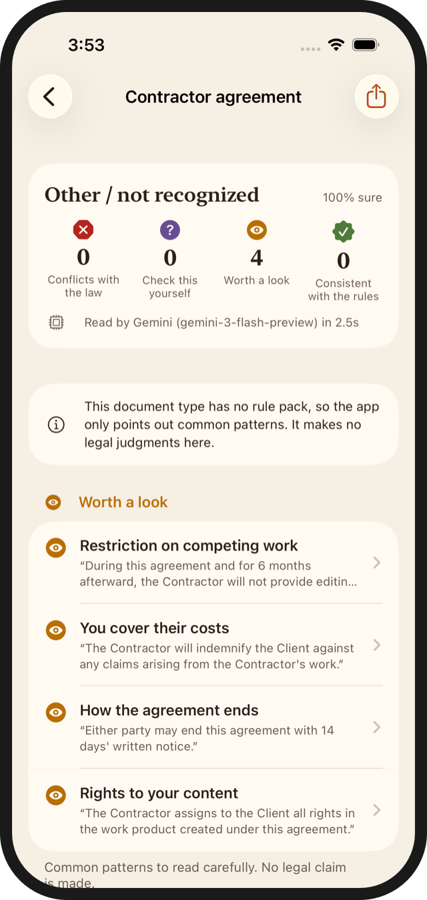

What it does
Leases and job offers often contain clauses that look binding but aren't. In Ontario, a "no pets" rule in a lease is void. So is a damage deposit, and so are most non-compete clauses in a job offer. Most people never find out, because nobody reads the law next to the contract.
Fine Print does that for you. You paste the text, open a PDF or take a photo. It finds the clauses that matter and sorts them into four groups: conflicts with the law, things to check yourself, things worth a second look, and clauses that are fine. Every legal claim comes with the section of the law it relies on, a link to the official text, and the date I last checked that rule against it.
Try it on your own document
Recruiters can't install an iPhone app from a portfolio, so the browser demo now runs the real thing. Paste a lease or job offer and it's checked live, usually in about three seconds. Before anything is sent, your browser strips email addresses, phone numbers and postal codes. You also see the safety checks working: any clause the AI claims but can't back up with an exact quote from your document is shown as thrown out, not quietly hidden.
How it avoids wrong answers
An AI that tells a tenant a legal clause is illegal does real harm, so the AI is never the one deciding. Its only job is to read: tag each clause from a fixed list and copy it word for word. Then ordinary code takes over. It checks that the quote really is in your document. It checks that the wording supports the AI's label. Only then does a written rule from the Residential Tenancies Act or the Employment Standards Act decide.
That second check exists because of a real test failure. I built 12 test documents designed to trip the app up. Both AI models read "Pets are welcome. The Tenant may keep cats and dogs" and tagged it as a no-pets rule. The quote was real, so the first check passed, and the app told the tenant the clause was void. Now code checks the wording against the label, and the demo has a "Try to break it" switch so you can turn that check off and see the wrong answer for yourself.
The results
I tested the browser version the same way. Three test documents it had never seen, including one with instructions hidden in it to trick the AI and one full of "no deposit" and "pets are welcome" wording, came back with every expected clause found and no wrong verdicts. A pasted recipe was recognised as not a contract and got no legal verdicts at all.
In the iPhone app




The app can read a document on the phone itself with Apple's built-in AI, so nothing leaves the device. In testing, that on-device model found about half the clauses Gemini found, so the app prefers Gemini but asks permission before sending anything.
Limits
- Ontario only, and only residential leases and employment contracts get legal verdicts. Other documents get the "worth a look" flags, with no legal claim.
- It is not legal advice. It points to the law; a tenant clinic, a lawyer or the Landlord and Tenant Board decides.
- The browser demo sends text to Google's Gemini on its free plan, which Google may use to improve its products. The page says so before you paste.